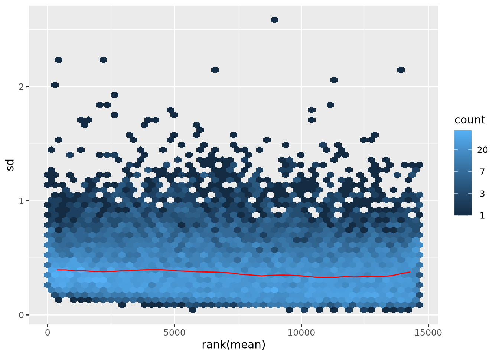
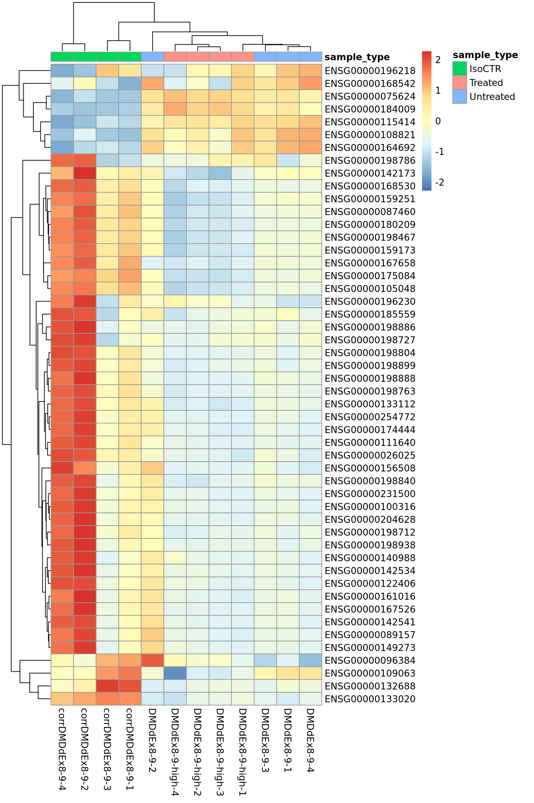
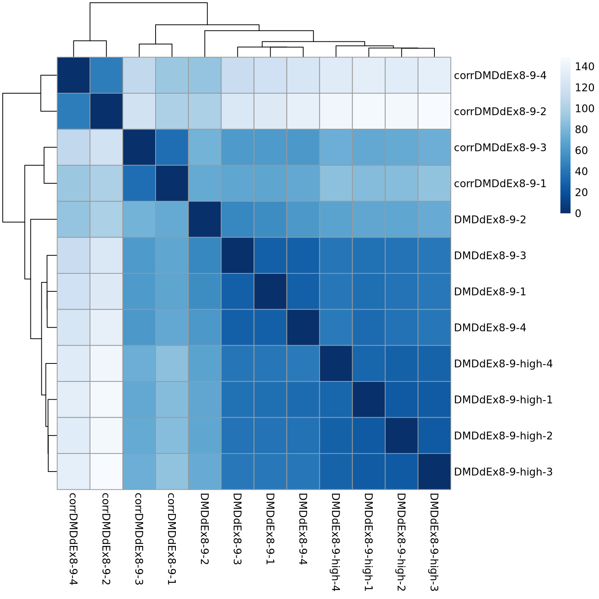
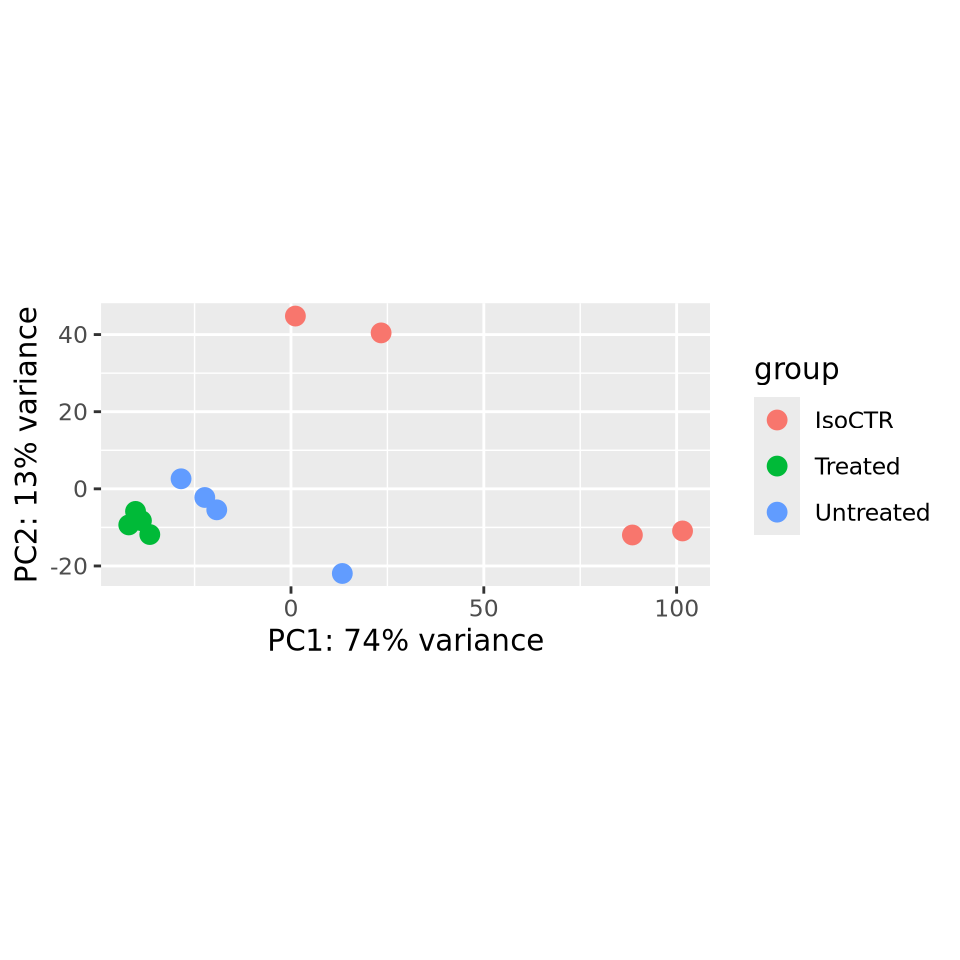
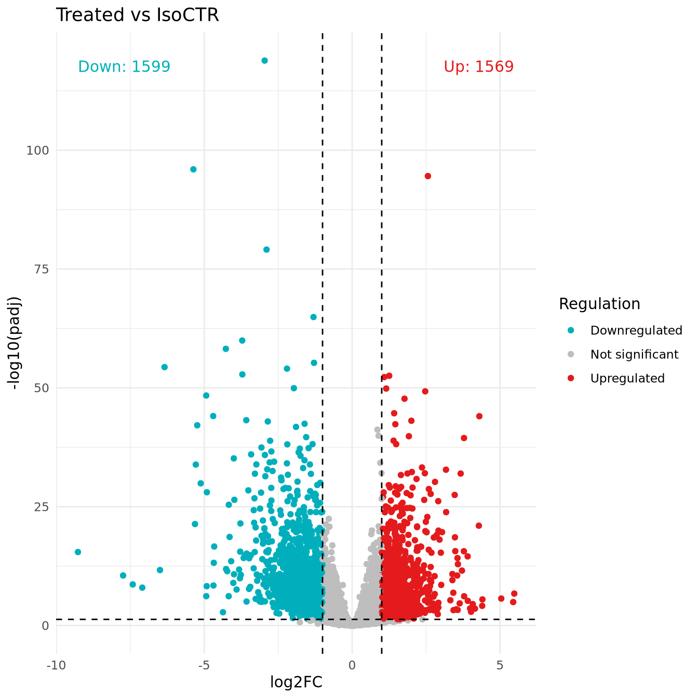
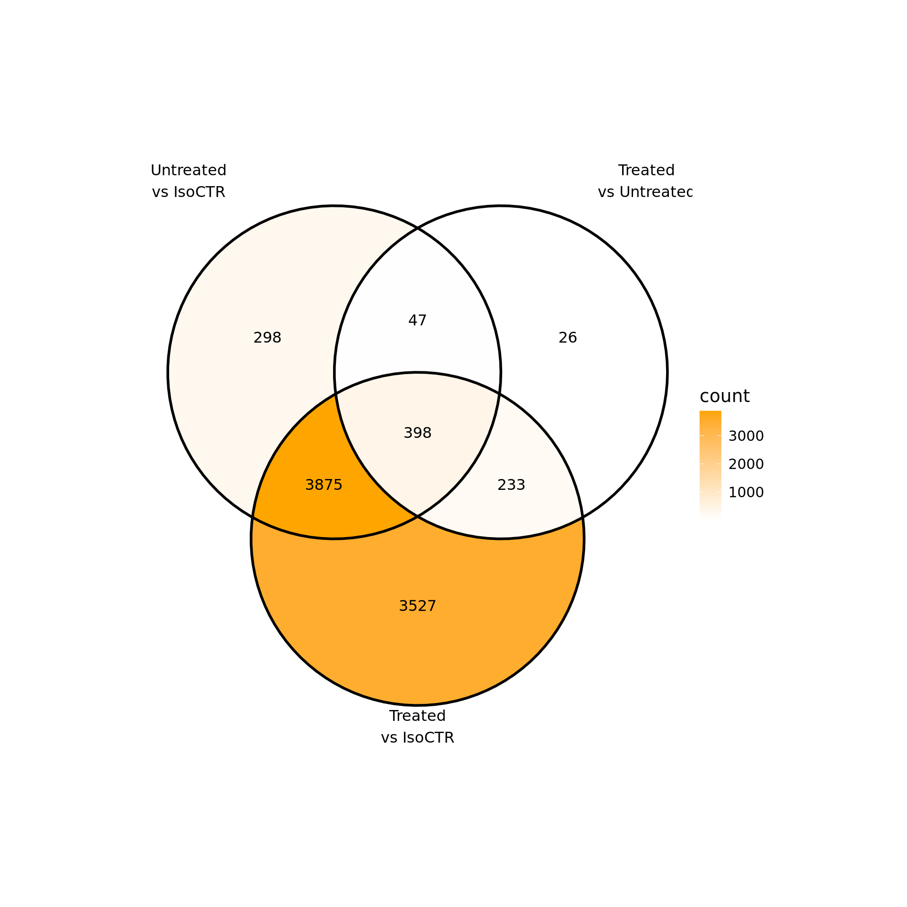
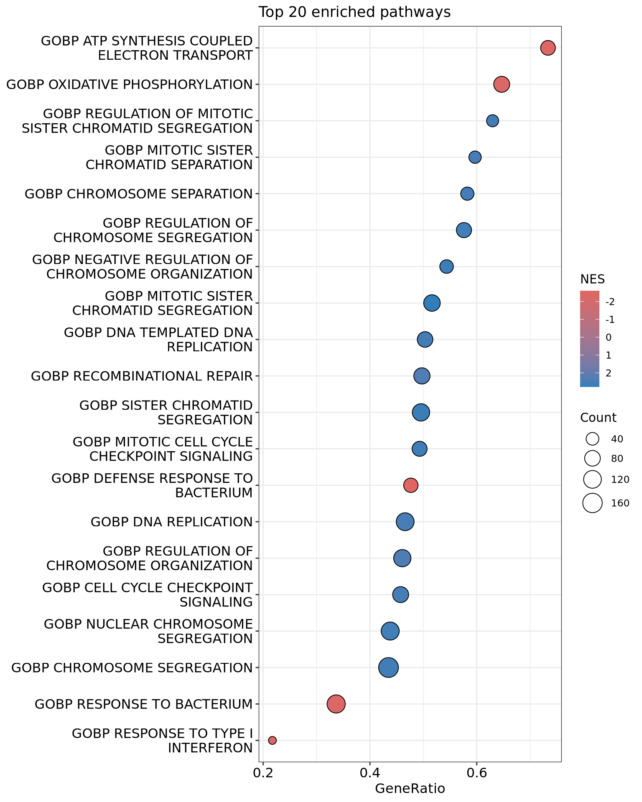
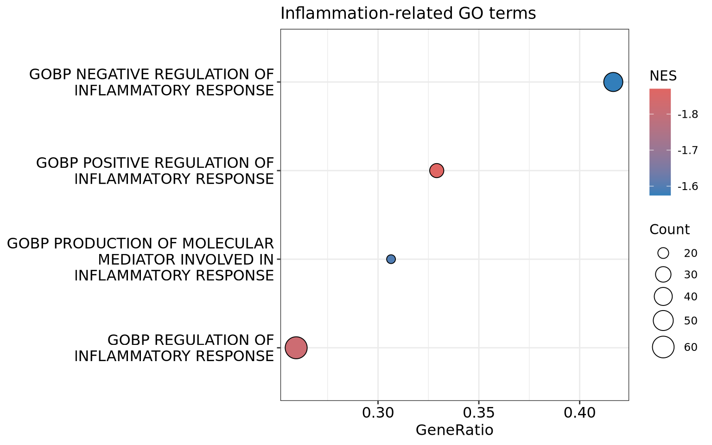
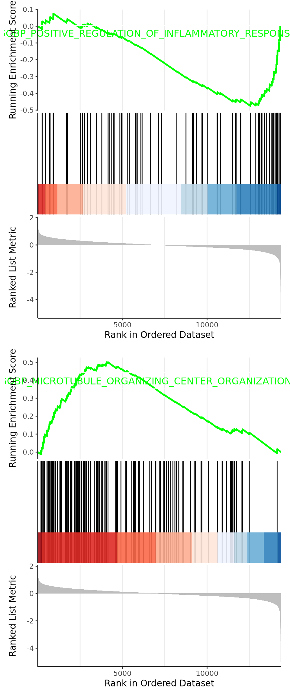

In this practice I’m going to note down all the steps to re-analyze a simple RNA-seq study. Data are obtained from our collaborator (Genethon; https://www.biorxiv.org/content/10.1101/2023.07.26.550063v4) who generated an organoid-like structure from DMD muscle cells (derived from patient iPSCs) co-cultured with fibroblasts. This dataset contains 12 samples of 3 conditions: IsoCTR, Untreated (disease exacerbated due to fibroblast incorporation), and Treated (MYOrganoid treated with high dose of AAV gene therapy). Each condition includes 4 biological replicates.
First, raw fastq files are imported into FastQC for some quality control checks. In return, we receive an HTML-based report on each fastq file.
It seems that the adapters haven’t been cut. We’ll use
fastp, an all-in-one fastq file preprocessor, for this
job.
Note: If the job keeps crashing, try to do half the number of samples until sorted BAM, delete fastq files, then proceed the other half.
Often check folder size:
Prior to alignment, we need to download human reference genome (GRCh38/hg38, as done in the preprint) and index it.
Now we’ll map the (paired) reads to the reference. Remember to use ‘clean’ fastq files. To avoid crashing the alignment, directly output sorted BAM files (skip SAM and unsorted BAM).
Convert SAM to BAM file (binary format) → save space (DONE)
BAM files need to be sorted (DONE) and indexed
Now we pass all the sorted, indexed BAM files through
featureCounts function (subread package) to generate the
count matrix. We also need an annotation file to do this. Parameters
-t "exon" -g gene_id are to count reads mapped to exon then
summarize to gene-level (i.e. many exons belong to one gene id).
Now we can read the count table into R for differential expression analysis:
count_tab <- read.table(file = "count_matrix.counts",
header = TRUE,
row.names = 1,
sep = "\t",
comment.char = "#")
# Clean column names
colnames(count_tab) <- gsub("^.*\\/", "",
colnames(count_tab)) # to match everything from the start of the string up to and including the last slash /
colnames(count_tab) <- gsub("\\.sorted\\.bam$", "",
colnames(count_tab)) # drop ".sorted.bam"
colnames(count_tab) <- gsub("^\\.\\.reads_mapping\\.", "",
colnames(count_tab)) # from the start, drop "..reads_mapping"
colnames(count_tab)## [1] "Chr" "Start"
## [3] "End" "Strand"
## [5] "Length" "SRR32076135"
## [7] "SRR32076136" "SRR32076137"
## [9] "SRR32076138" "SRR32076139"
## [11] "SRR32076140" "SRR32076141"
## [13] "SRR32076142" "SRR32076143"
## [15] "SRR32076144" "SRR32076145"
## [17] "SRR32076146"Drop all annotation columns and keep the counts only:
## SRR32076135 SRR32076136
## ENSG00000186092 0 0
## ENSG00000284733 0 0
## ENSG00000284662 0 0
## ENSG00000187634 414 289
## ENSG00000188976 2342 2056
## ENSG00000187961 627 557
## SRR32076137 SRR32076138
## ENSG00000186092 0 0
## ENSG00000284733 0 0
## ENSG00000284662 0 0
## ENSG00000187634 107 437
## ENSG00000188976 1091 2672
## ENSG00000187961 259 643
## SRR32076139 SRR32076140
## ENSG00000186092 0 0
## ENSG00000284733 0 0
## ENSG00000284662 0 0
## ENSG00000187634 242 375
## ENSG00000188976 1551 2108
## ENSG00000187961 361 502
## SRR32076141 SRR32076142
## ENSG00000186092 0 0
## ENSG00000284733 0 0
## ENSG00000284662 0 0
## ENSG00000187634 337 138
## ENSG00000188976 2394 3062
## ENSG00000187961 642 563
## SRR32076143 SRR32076144
## ENSG00000186092 0 0
## ENSG00000284733 0 0
## ENSG00000284662 0 0
## ENSG00000187634 419 345
## ENSG00000188976 2306 2449
## ENSG00000187961 594 559
## SRR32076145 SRR32076146
## ENSG00000186092 0 0
## ENSG00000284733 0 0
## ENSG00000284662 0 0
## ENSG00000187634 117 111
## ENSG00000188976 1196 2706
## ENSG00000187961 278 495Also read the metadata file:
library(readxl)
metadata <- read_excel("metadata.xlsx")
meta <- as.data.frame(metadata[,c(1,3)]) # keep 2 columns: sample and sample_type
meta$sample_type <- factor(meta$sample_type) # sample_type as factor
# sample names have to be rownames
rownames(meta) <- meta$sample
meta$sample <- NULL
# Map row names (sample names) from meta to column names of count table
name_map <- setNames(metadata$sample, metadata$sample_id)
colnames(count_tab) <- name_map[colnames(count_tab)]
# Reorder meta to match the order of columns in count table
meta <- meta[colnames(count_tab), , drop=FALSE]
# Check if it's good to go
all(rownames(meta) == colnames(count_tab))## [1] TRUEDESeq2 expects a raw count matrix as input. The model will internally correct for library size.
Note: nrow(colData) == ncol(countData)
library(DESeq2)
dds <- DESeqDataSetFromMatrix(
countData = count_tab,
colData = meta,
design = ~ sample_type)
dds## class: DESeqDataSet
## dim: 20420 12
## metadata(1): version
## assays(1): counts
## rownames(20420): ENSG00000186092
## ENSG00000284733 ... ENSG00000277475
## ENSG00000268674
## rowData names(0):
## colnames(12): DMDdEx8-9-high-1
## DMDdEx8-9-high-2 ... corrDMDdEx8-9-2
## corrDMDdEx8-9-1
## colData names(1): sample_typeHere we’re keeping only genes that have at least 10 read counts in at least 4 samples. In the mean-sd plot, the variance is stabilized, meaning genes with low and high mean counts all have similar variances.
smallestGroupSize <- 4
keep <- rowSums(counts(dds) >= 10) >= smallestGroupSize
dds_filt <- dds[keep,]
library(vsn)
vsd <- vst(dds_filt)
meanSdPlot(assay(vsd))
For differential expression analysis, DESeq2 operates directly on the raw counts. However, for clustering and visualization, we better use normalized and transformed counts. DESeq2 uses a normalization method called median of ratios.
Note: we have to run differential expression analysis to add normalization factors (since it’s an all-in-one function)
# DESeqDataSet object does not store a matrix of normalized counts by default
# We can to get it by: counts(dds, normalized=TRUE)
dds_filt <- DESeq(dds_filt)## estimating size factors## estimating dispersions## gene-wise dispersion estimates## mean-dispersion relationship## final dispersion estimates## fitting model and testingselect_top_genes <- order(rowMeans(counts(dds_filt, normalized=TRUE)), # mean of normalized counts of each gene across samples
decreasing=TRUE)[1:50] # select top 50 genes with highest mean expression
df <- as.data.frame(colData(dds_filt)[, "sample_type", drop=FALSE])
# log2 transformation of normalized counts
# pc = 1 is pseudocount ==> log2(n + 1)
ntd <- normTransform(dds_filt, f = log2, pc = 1)This is a heatmap of top 50 highly expressed genes. Expression values are presented as normalized, log2-transformed counts and are row-scaled (so that mean expression of each gene across samples is 0). Here we see samples are clustered based on top gene expression.
library("pheatmap")
pheatmap(assay(ntd)[select_top_genes,],
scale = "row", # z score
cluster_rows=TRUE,
show_rownames=TRUE,
cluster_cols=TRUE,
annotation_col=df)
We can make a heatmap of (euclidean) distances between each pair of samples. With this, we have an overall idea of how samples are similar to each other.
sampleDists <- dist(t(assay(vsd)))
library("RColorBrewer")
sampleDistMatrix <- as.matrix(sampleDists)
colors <- colorRampPalette( rev(brewer.pal(9, "Blues")) )(255)
pheatmap(sampleDistMatrix,
clustering_distance_rows=sampleDists,
clustering_distance_cols=sampleDists,
col=colors)
Another way to evaluate the batch effects is to plot the principle components of samples (PCA).
## using ntop=10000 top features by variance
DESeq(dds) performs:
estimation of size factors
estimation of dispersion
Negative Binomial GLM fitting and Wald statistics
# If needed, set 'IsoCTR' as baseline condition :
# dds_filt$sample_type <- relevel(dds_filt$sample_type, ref = "IsoCTR")
# dds_filt <- DESeq(dds_filt)
resultsNames(dds_filt) # names of the individual effects (coefficients)## [1] "Intercept"
## [2] "sample_type_Treated_vs_IsoCTR"
## [3] "sample_type_Untreated_vs_IsoCTR"p values are corrected by Benjamin-Hochberg with
alpha = 0.05. How many genes were (significantly)
up/down-regulated in ‘Treated’ compared to
‘IsoCTR’?
Treated_vs_IsoCTR <- results(dds_filt,
name = "sample_type_Treated_vs_IsoCTR",
alpha = 0.05)
summary(Treated_vs_IsoCTR)##
## out of 14658 with nonzero total read count
## adjusted p-value < 0.05
## LFC > 0 (up) : 3771, 26%
## LFC < 0 (down) : 4262, 29%
## outliers [1] : 3, 0.02%
## low counts [2] : 0, 0%
## (mean count < 5)
## [1] see 'cooksCutoff' argument of ?results
## [2] see 'independentFiltering' argument of ?resultsFor the volcano plot, we’ll use the full
results table and highlight the significant hits. Be
careful that there are genes where padj is missing due to
independent filtering inside DESeq2 (prior to multiple testing
correction) or log2FoldChange is missing if a gene has
zero counts across all samples of one condition.
# Load libraries
library(tidyverse)
library(ggplot2)
library(ggrepel)
library(dplyr)
library(tibble)
Treated_vs_IsoCTR_DEGs <- Treated_vs_IsoCTR %>%
as.data.frame() %>%
rownames_to_column(var = "ENSEMBL") %>%
# Remove genes where log2FC or padj is missing
filter(!is.na(log2FoldChange), !is.na(padj))
Treated_vs_IsoCTR_DEGs$regulation <- ifelse(
Treated_vs_IsoCTR_DEGs$padj < 0.05 &
Treated_vs_IsoCTR_DEGs$log2FoldChange > 1, "Up",
ifelse( Treated_vs_IsoCTR_DEGs$padj < 0.05 &
Treated_vs_IsoCTR_DEGs$log2FoldChange < -1, "Down",
"NotSig")
)
# Count up/down genes
counts <- Treated_vs_IsoCTR_DEGs %>%
filter(regulation %in% c("Up","Down")) %>%
group_by(regulation) %>%
summarise(n = n(), .groups = "drop") %>%
tidyr::pivot_wider(names_from = regulation, values_from = n, values_fill = 0)
# Volcano plot
p <- ggplot(data = Treated_vs_IsoCTR_DEGs,
aes(x = log2FoldChange,
y = -log10(padj))) +
geom_point(aes(col = regulation)) +
# Add threshold lines
geom_hline(yintercept = -log10(0.05),
col = "black",
linetype = 'dashed') +
geom_vline(xintercept = c(-1, 1),
col = "black",
linetype = 'dashed') +
scale_color_manual(values = c("Down"="#00AFBB",
"NotSig"="grey",
"Up"="#E41A1C"),
labels = c("Down"="Downregulated",
"NotSig"="Not significant",
"Up"="Upregulated")) +
labs(x = "log2FC",
y = "-log10(padj)",
color = "Regulation",
title = "Treated vs IsoCTR") +
theme_minimal() +
# Annotate number of up/down genes on the plot
annotate("text", x = max(Treated_vs_IsoCTR_DEGs$log2FoldChange, na.rm=TRUE),
y = max(-log10(Treated_vs_IsoCTR_DEGs$padj), na.rm=TRUE),
label = paste0("Up: ", counts$Up),
hjust = 1, vjust = 1, col = "#E41A1C") +
annotate("text", x = min(Treated_vs_IsoCTR_DEGs$log2FoldChange, na.rm=TRUE),
y = max(-log10(Treated_vs_IsoCTR_DEGs$padj), na.rm=TRUE),
label = paste0("Down: ", counts$Down),
hjust = 0, vjust = 1, col = "#00AFBB")
p
# Write the file
write.table(Treated_vs_IsoCTR_DEGs,
file = "DEG_List/Treated_vs_IsoCTR_DEGs.txt",
sep = "\t",
quote = FALSE,
row.names = FALSE)How many genes were (significantly) up/down-regulated in ‘Untreated’ compared to ‘IsoCTR’?
Untreated_vs_IsoCTR <- results(dds_filt,
name = "sample_type_Untreated_vs_IsoCTR",
alpha = 0.05)
summary(Untreated_vs_IsoCTR)##
## out of 14658 with nonzero total read count
## adjusted p-value < 0.05
## LFC > 0 (up) : 1933, 13%
## LFC < 0 (down) : 2685, 18%
## outliers [1] : 3, 0.02%
## low counts [2] : 0, 0%
## (mean count < 5)
## [1] see 'cooksCutoff' argument of ?results
## [2] see 'independentFiltering' argument of ?results# Remove genes where log2FC or padj is missing
# Make row names a column EMSEMBL
Untreated_vs_IsoCTR_DEGs <-
Untreated_vs_IsoCTR %>%
as.data.frame() %>%
filter(!is.na(log2FoldChange), !is.na(padj)) %>%
rownames_to_column(var = "ENSEMBL")
# Add column 'regulation'
Untreated_vs_IsoCTR_DEGs$regulation <-
ifelse( Untreated_vs_IsoCTR_DEGs$padj < 0.05 &
Untreated_vs_IsoCTR_DEGs$log2FoldChange > 1, "Up",
ifelse( Untreated_vs_IsoCTR_DEGs$padj < 0.05 &
Untreated_vs_IsoCTR_DEGs$log2FoldChange < -1, "Down",
"NotSig")
)
# Write the file
write.table(Untreated_vs_IsoCTR_DEGs,
file = "DEG_List/Untreated_vs_IsoCTR_DEGs.txt",
sep = "\t",
quote = FALSE,
row.names = FALSE)How many genes were (significantly) up/down-regulated in ‘Treated’ compared to ‘Untreated’?
Treated_vs_Untreated <-
results(dds_filt,
contrast=c("sample_type","Treated","Untreated"),
alpha = 0.05)
summary(Treated_vs_Untreated)##
## out of 14658 with nonzero total read count
## adjusted p-value < 0.05
## LFC > 0 (up) : 315, 2.1%
## LFC < 0 (down) : 389, 2.7%
## outliers [1] : 3, 0.02%
## low counts [2] : 285, 1.9%
## (mean count < 9)
## [1] see 'cooksCutoff' argument of ?results
## [2] see 'independentFiltering' argument of ?resultsWe wanna intersect 3 sets of DE genes:
Untreated vs IsoCTR: genes that are differentially expressed in DMD organoid compared to isogenic control
Treated vs Untreated: genes that are differentially expressed in AAV-treated DMD organoid compared to non-treated (presumably ‘corrected’ by gene therapy)
Treated vs IsoCTR: presumably ‘not corrected’ by gene therapy
We can use abs(log2FoldChange) > 1 but it seems too
strict.
x <- list(
rownames(Untreated_vs_IsoCTR %>%
as.data.frame() %>%
filter(padj < 0.05 & abs(log2FoldChange) > 0)),
rownames(Treated_vs_Untreated %>%
as.data.frame() %>%
filter(padj < 0.05 & abs(log2FoldChange) > 0)),
rownames(Treated_vs_IsoCTR %>%
as.data.frame() %>%
filter(padj < 0.05 & abs(log2FoldChange) > 0))
)
library("ggVennDiagram")
ggVennDiagram(x, label_alpha = 0,
label = "count",
category.names = c("Untreated\nvs IsoCTR",
"Treated\nvs Untreated",
"Treated\nvs IsoCTR")) +
theme(plot.margin = margin(1, 4, 1, 4, "cm"),
text = element_text(size = 14)) +
scale_fill_gradient(low = "white", high = "orange")
Prior to GSEA, we need to create a ranked list of the genes. But first of all, let’s tidy our table of DEGs (just as before).
# Remove genes where log2FC or padj is missing
# Make row names a column EMSEMBL
Treated_vs_Untreated_DEGs <-
Treated_vs_Untreated %>%
as.data.frame() %>%
filter(!is.na(log2FoldChange), !is.na(padj)) %>%
rownames_to_column(var = "ENSEMBL")
# Add column 'regulation'
Treated_vs_Untreated_DEGs$regulation <-
ifelse( Treated_vs_Untreated_DEGs$padj < 0.05 &
Treated_vs_Untreated_DEGs$log2FoldChange > 1, "Up",
ifelse( Treated_vs_Untreated_DEGs$padj < 0.05 &
Treated_vs_Untreated_DEGs$log2FoldChange < -1, "Down",
"NotSig")
)
# Write the file
write.table(Treated_vs_Untreated_DEGs,
file = "DEG_List/Treated_vs_Untreated_DEGs.txt",
sep = "\t",
quote = FALSE,
row.names = FALSE)A bunch of ranking metrics can be used to rank the list of input genes. In the end, they should all correlate to the two phenotypes signatured by the gene set that we’re interested in.
Here we’ll try using the (preferably shrunken) log fold change (LFC) in DESeq2. Why shrinkage of LFC estimates (toward 0)? - to avoid inflation by genes with small counts/large standard errors.
Treat_vs_Untreated_DEGs <-
read.table(file = "DEG_List/Treated_vs_Untreated_DEGs.txt",
header = TRUE, sep = "\t")
Treat_vs_Untreated_DEGs_ranked <- Treat_vs_Untreated_DEGs %>%
arrange(desc(log2FoldChange)) %>%
pull(log2FoldChange, name=ENSEMBL) # create named vector
head(Treat_vs_Untreated_DEGs_ranked)## ENSG00000166450 ENSG00000169840
## 1.739995 1.496896
## ENSG00000105810 ENSG00000274276
## 1.495937 1.470676
## ENSG00000187553 ENSG00000163273
## 1.470314 1.364892To obtain the gene set of interest:
library(msigdbr)
GOBP_all <- msigdbr(
species = "Homo sapiens",
collection = "C5",
subcollection = "GO:BP"
) %>%
dplyr::select(gs_name, ensembl_gene)
head(GOBP_all)## # A tibble: 6 × 2
## gs_name ensembl_gene
## <chr> <chr>
## 1 GOBP_10_FORMYLTETRAHYDROFOLA… ENSG0000014…
## 2 GOBP_10_FORMYLTETRAHYDROFOLA… ENSG0000014…
## 3 GOBP_10_FORMYLTETRAHYDROFOLA… ENSG0000013…
## 4 GOBP_10_FORMYLTETRAHYDROFOLA… ENSG0000010…
## 5 GOBP_10_FORMYLTETRAHYDROFOLA… ENSG0000012…
## 6 GOBP_2FE_2S_CLUSTER_ASSEMBLY ENSG0000018…Running GSEA with all GO:BP gene sets:
library(clusterProfiler)
gsea_GOBP_all <- GSEA(
Treat_vs_Untreated_DEGs_ranked,
TERM2GENE = GOBP_all,
pvalueCutoff = 0.05)## using 'fgsea' for GSEA analysis, please cite Korotkevich et al (2019).## preparing geneSet collections...## GSEA analysis...## Warning in fgseaMultilevel(pathways =
## pathways, stats = stats, minSize = minSize,
## : For some pathways, in reality P-values
## are less than 1e-10. You can set the `eps`
## argument to zero for better estimation.## leading edge analysis...## done...## [1] "GOBP_MITOTIC_SISTER_CHROMATID_SEGREGATION"
## [2] "GOBP_NEGATIVE_REGULATION_OF_CHROMOSOME_ORGANIZATION"
## [3] "GOBP_MITOTIC_CELL_CYCLE_CHECKPOINT_SIGNALING"
## [4] "GOBP_SISTER_CHROMATID_SEGREGATION"
## [5] "GOBP_DEFENSE_RESPONSE_TO_BACTERIUM"
## [6] "GOBP_REGULATION_OF_MITOTIC_SISTER_CHROMATID_SEGREGATION"
## [7] "GOBP_CHROMOSOME_SEPARATION"
## [8] "GOBP_REGULATION_OF_CHROMOSOME_SEGREGATION"
## [9] "GOBP_MITOTIC_SISTER_CHROMATID_SEPARATION"
## [10] "GOBP_CHROMOSOME_SEGREGATION"
## [11] "GOBP_NUCLEAR_CHROMOSOME_SEGREGATION"
## [12] "GOBP_DNA_TEMPLATED_DNA_REPLICATION"
## [13] "GOBP_CELL_CYCLE_CHECKPOINT_SIGNALING"
## [14] "GOBP_ATP_SYNTHESIS_COUPLED_ELECTRON_TRANSPORT"
## [15] "GOBP_DNA_REPLICATION"
## [16] "GOBP_TUMOR_NECROSIS_FACTOR_SUPERFAMILY_CYTOKINE_PRODUCTION"
## [17] "GOBP_OXIDATIVE_PHOSPHORYLATION"
## [18] "GOBP_REGULATION_OF_CHROMOSOME_ORGANIZATION"
## [19] "GOBP_DEFENSE_RESPONSE_TO_VIRUS"
## [20] "GOBP_RESPONSE_TO_BACTERIUM"library(dplyr)
library(enrichplot)
dotplot(gsea_GOBP_all, showCategory = 20,
color = "NES") +
ggtitle("Top 20 enriched pathways")
What if I wanna see only terms that relate to “inflammation”?
library(dplyr)
library(enrichplot)
# Subset result table for terms containing "*inflam*"
inflam_terms <- gsea_GOBP_all@result %>%
filter(grepl("inflam", Description, ignore.case = TRUE))
# Create a new gseaResult object
gsea_GOBP_inflam <- gsea_GOBP_all
# The result table in this new object is the subset one
gsea_GOBP_inflam@result <- inflam_terms
# Plot only '*inflam*'-related sets
dotplot(gsea_GOBP_inflam, color = "NES",
showCategory = nrow(inflam_terms)) +
ggtitle("Inflammation-related GO terms")
library(enrichplot)
library(patchwork)
library(cowplot)
# Visualization
p1 <- gseaplot2(gsea_GOBP_all, geneSetID = "GOBP_POSITIVE_REGULATION_OF_INFLAMMATORY_RESPONSE",
pvalue_table = TRUE)
p1_list <- wrap_plots(p1, ncol = 1,
heights = c(1,1,1),
align = "v")
p2 <- gseaplot2(gsea_GOBP_all, geneSetID = "GOBP_MICROTUBULE_ORGANIZING_CENTER_ORGANIZATION",
pvalue_table = TRUE)
p2_list <- wrap_plots(p2, ncol = 1,
heights = c(1,1,1),
align = "v")
# Combine 2 plots
plot_grid(p1_list, p2_list, ncol = 1, align = "v")
There are many ways to get gene names based on Ensembl IDs. However,
some IDs, usually corresponding to non-coding RNAs, do not match a gene
symbol. If we care only about protein-coding genes, maybe go back to
featureCounts and consider reads that map CDS.
Here we’ll try keeping the IDs as they are for those that don’t have a gene symbol.
Same for IDs that match multiple gene symbols, we keep the Ensembl IDs to make it less ambiguous.
library(org.Hs.eg.db)
annots <- select(org.Hs.eg.db,
# ensembl ids in count table
keys=rownames(count_tab),
columns=c("SYMBOL", "GENENAME"),
keytype="ENSEMBL")## 'select()' returned 1:many mapping
## between keys and columns## Warning in
## annots$SYMBOL[is.na(annots$SYMBOL)] <-
## annots$ENSEMBL: number of items to replace
## is not a multiple of replacement length# Collapse SYMBOLs, but if >1 SYMBOL, use the ENSEMBL ID instead
library(dplyr)
annots <- annots %>%
group_by(ENSEMBL) %>%
summarise(
SYMBOL = ifelse(n_distinct(SYMBOL) == 1,
unique(SYMBOL),
ENSEMBL)
)
# Add 'SYMBOL' column to DEG table
Treated_vs_Untreated_DEGs_annot <- Treated_vs_Untreated_DEGs %>% left_join(annots, by = "ENSEMBL")
head(Treated_vs_Untreated_DEGs_annot)## ENSEMBL baseMean log2FoldChange
## 1 ENSG00000187634 262.6958 -0.02988649
## 2 ENSG00000188976 2060.0851 -0.03827750
## 3 ENSG00000187961 484.3473 0.02745172
## 4 ENSG00000188290 1008.3230 -0.29908219
## 5 ENSG00000187608 255.1310 -1.54775797
## 6 ENSG00000188157 7175.7911 0.04679664
## lfcSE stat pvalue
## 1 0.2634260 -0.1134531 0.9096713783
## 2 0.1034109 -0.3701496 0.7112710455
## 3 0.1223824 0.2243111 0.8225152537
## 4 0.2779788 -1.0759173 0.2819642516
## 5 0.4053978 -3.8178745 0.0001346064
## 6 0.3369123 0.1388986 0.8895303024
## padj regulation SYMBOL
## 1 0.966504821 NotSig SAMD11
## 2 0.881945752 NotSig NOC2L
## 3 0.930906475 NotSig KLHL17
## 4 0.645048466 NotSig HES4
## 5 0.007354729 Down ISG15
## 6 0.959285164 NotSig AGRN